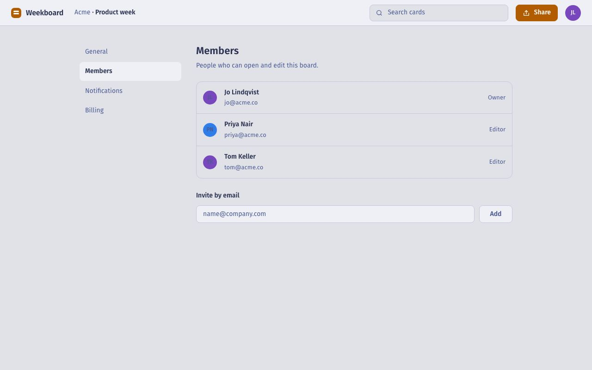

1Pressed Add, saw nothing change, pressed it again; Sam got two invitations.Blocked/settings/members · button "Add"123452 of 5
2The Add button looked switched off; Person 2 pressed I couldn't do this.Blocked/settings/members · button "Add"123451 of 5
3Looked for Invite in the Share menu and found only link options.Slowed/board · menu "Share"123454 of 5
4Typed Sam's email into the board search.Confused/board · field "Search"123452 of 5
Found Settings, then Members, on their own.Worked/settings · tab "Members"123455 of 5

00:58 → 01:04
I wasn't sure the first Add did anything, so I pressed it again.Person 3, after the task
Where
/settings/members · button "Add"
Moments
Person 3 · 00:58Person 4 · 00:41
Suggested change
On press, change the button to "Invited sam@acme.co" and disable it.
Copy as an issue
After the goal: would it help them 4 of 5 · easy to use 2 of 5 · first look: named the purpose 4 of 5, first click on your path 3 of 5 · screened as signed up for a planning tool this week · desktop Chromium, 1280×800 · Five people give an 87% chance of seeing any problem that hits one in three; problems are found from what people did and can be missed, so watch the clips.